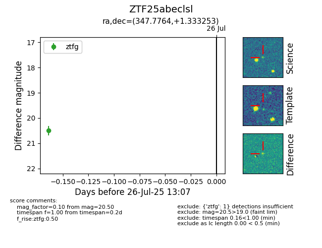

Target ZTF25abeclsl at 2025-07-26 13:07, see:
FINK: fink-portal.org/ZTF25abeclsl
Lasair: lasair-ztf.lsst.ac.uk/objects/ZTF25abeclsl
ALeRCE: alerce.online/object/ZTF25abeclsl
alt names
ZTF25abeclsl (ztf,fink)
coordinates:
equatorial (ra, dec) = (347.7764,+1.33325)
galactic (l, b) = (78.5841,-52.67688)
photometry
last ztfg=20.50
1 ztfg detections
